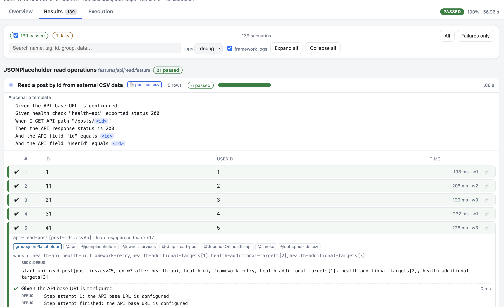

Your first project
You have a project with one feature. In ten minutes you will add test data from a file, make one scenario depend on another, run in parallel and read the plan.
This page continues from Getting started. Every file below was run as shown.
1. Test data from a file
Put the rows in a CSV file instead of an Examples table.
product,qty,total
apple,2,1.00
melon,3,9.00Feature: Pricing from a data file
Background:
Given the catalogue:
| product | price |
| apple | 0.50 |
| melon | 3.00 |
@data:prices.csv
Scenario: <qty> x <product> costs <total>
When I add <qty> "<product>"
Then the basket total is <total>Tell bddr where data lives with dataDir: 'data' in the config. Each CSV row becomes a scenario. The steps are the ones you already have. More in Data files.
2. A scenario that needs another
@group:orders
Feature: Orders
@id:create-order
Scenario: Create an order
When I place an order for "apple"
Then the order number is remembered
@dependsOn:create-order
Scenario: Cancel the order
When I cancel the order placed earlier
Then the order status is "cancelled"import { strict as assert } from 'node:assert';
import { Then, When } from '@bddr/runtime';
When('I place an order for {string}', (ctx, product: string) => {
ctx.state.set('order', { id: 'ORD-1', product });
});
Then('the order number is remembered', (ctx) => {
ctx.export('orderId', ctx.state.get<{ id: string }>('order').id);
});
When('I cancel the order placed earlier', (ctx) => {
const orderId = ctx.from('create-order').get<string>('orderId');
ctx.state.set('cancelled', orderId);
});
Then('the order status is {string}', (ctx, status: string) => {
assert.ok(ctx.state.get<string>('cancelled'));
assert.equal(status, 'cancelled');
});"Cancel the order" waits for "Create an order" and reads the order number it exported. See Dependencies.
3. Run in parallel, keep the orders in order
import { defineConfig } from '@bddr/cli';
export default defineConfig({
features: 'features/**/*.feature',
steps: 'steps/**/*.ts',
dataDir: 'data',
workers: 4,
history: true,
retry: { scenario: 1 },
groups: {
orders: { mode: 'serial' },
},
reporters: ['console', ['html', { outputFile: 'reports/report.html' }]],
profiles: {
smoke: { tags: '@smoke' },
},
});workers: 4runs up to four scenarios at a time.- The
ordersgroup is serial, so its members run one after the other while the other scenarios run beside them. retrygives a failed scenario one more attempt. A pass after a failure is reported as flaky.history: truerecords each run in.bddr/history.- The
smokeprofile selects scenarios tagged@smoke.
4. Look at the plan, then run
$ npx bddr planPlan: 7 scenario(s), 1 group(s), workers=4
group orders: serial, 2 member(s)
features/basket.feature::add-a-single-product
features/basket.feature::totals-for-different-quantities[1]
features/basket.feature::totals-for-different-quantities[2]
create-order [orders]
features/orders.feature::cancel-the-order [orders]
<- create-order
features/pricing-data.feature::qty-x-product-costs-total[prices.csv#1]
features/pricing-data.feature::qty-x-product-costs-total[prices.csv#2]The arrow shows the dependency. To see why one scenario waits or runs when it does, ask:
$ npx bddr plan --explain create-orderThen run, with a process per worker, and with only the smoke profile:
$ npx bddr run --pool process
$ npx bddr -p smoke
$ npx bddr validate
$ npx bddr historyvalidate checks the specs and steps without running them. history becomes useful after a few runs: it lists the flakiest and slowest scenarios.

Where to go next
- Drive a browser: Playwright or Selenium.
- Test an API: axios.
- Control the schedule: Groups, Locks and priority.
- Move your CI to many machines: Sharding.